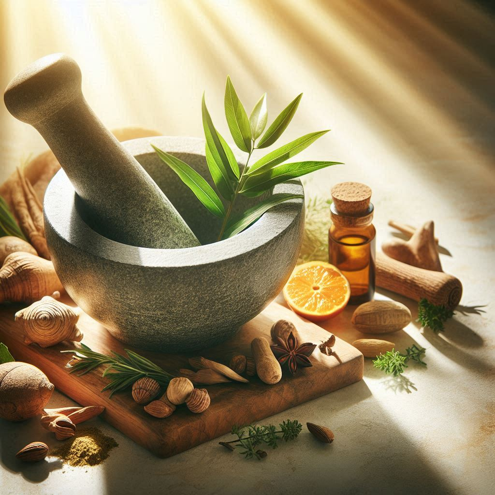
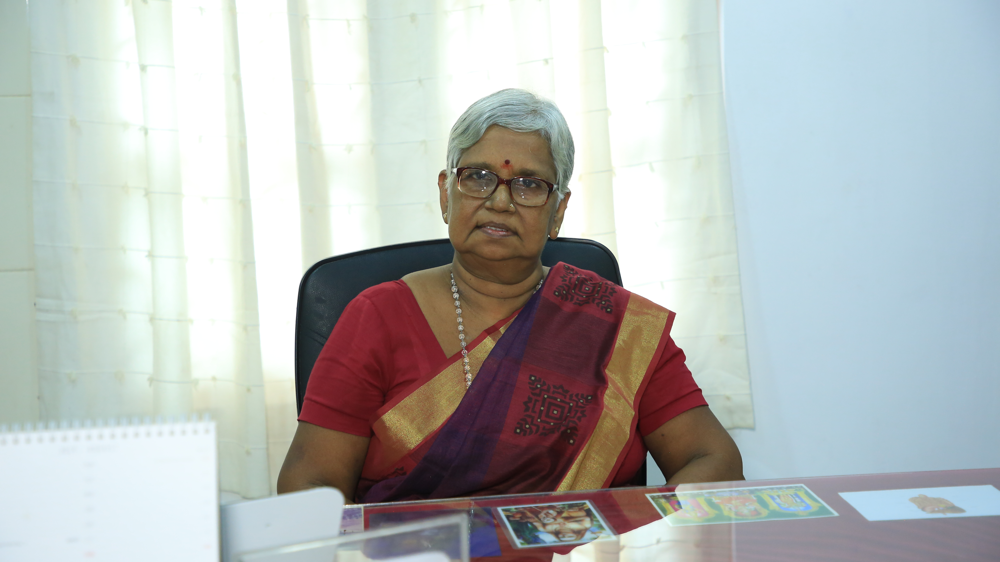
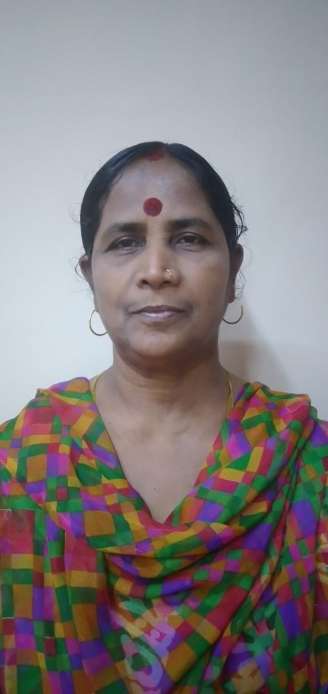

Mangalapathy Ayurveda was established to enhance the holistic services of hereditary Ayurvedic practitioners by Dr. R. Mangalambigai Ammal. She brought the experience of generations of Ayurvedic service as the chief physician at the centre. Mangalapathy Ayurveda began its journey at a time when the Ayurvedic products were regarded with insignificance and also the crisis situation was severe in Jaffna. Even though we earned a remarkable reputation by the intensive focus on formulating the Ayurvedic medicines through the knowledge gained from several India visits. The Centre has been providing high-quality medicines along with Traditional food supplements in certified standards by the leading team of experienced doctors.
Commitment to preserving the ancient traditions of Ayurveda while embracing modern scientific advancements, we strive to become a trusted global destination for wellness, where every individual can embark on a transformative journey towards a healthier and more balanced
Enhance Mangalapathy Ayurveda as a trusted head-to-heel brand with an in-depth and long-term approach, upgrading at each step the standard to guide individuals on their path to holistic well-being and longevity.
In Hinduism, Garuda is known as the 'king of the birds' and also the vehicle (vahana) of Lord Vishnu. Thus, similar to an Eagle’s rebirth in order to survive along with Focus, Sharp vision, Alertness, Fearlessness & Tenacious attributes, our logo symbolizes our willingness to shine through the challenges in the evolving world.

Dr.Mangalambigai Ammal is the founder & CEO of Mangalapthy Ayurveda. The journey of Mangalapathy Ayurveda began with a visionary endeavour by Dr.Mangalambigai when, it was significant to her family and the public during 1973. As the result of acknowledging the eminence of her hereditary medical practices. Later, she established the clinic on a small scale throughout many challenges such as the crisis situation and displacement in a women empower family in 1976. Afterwards, she visited India to explore several unique traditional treatment methods and began manufacturing medicines by her own to expand the service in Sri Lanka. With a deep understanding of the principles of Ayurveda, she customizes personalized wellness plans that align with each individual's unique constitution and lifestyle. She is dedicated to empowering individuals to take charge of their health, fostering a harmonious balance between the natural elements within their bodies, and promoting longevity and vitality. She got the Wedaduru Abhiman Presidential Ayurveda Awards in 2023. At present, she has been continuing her service together with the support of her brother’s family.
Dr.Lakshmanaiyer, brother of Dr.Mangalambigai Ammal, is one of the Director, Physician and Dietary Consultant in Mangalapathy Ayurveda. He is an influential figure in the field of Ayurveda for over 40 years, he had succeeded in treating heart diseases, renal diseases and Chronic diseases such as Ulcer, Arthritis, Diabetes and its complications through the way of our unique traditional Ayurvedic system along with our own finest medicines. Also, he’s incharge for the proper formulations & preparational methods of our medicines. Together with our team, he plays a critical role in providing holistic treatments & preventive methods along with traditional healthy food products for the Body & Mind as the topmost service.

Dr.L.Prakatheeswaran, an Executive Director and Ayurvedic physician at Mangalapathy Ayurveda, is deeply involved in the World Bank Project aimed at modernizing Ayurvedic medicine preparation and promoting healthy foods for commercialization, export, and the advancement of Ayurvedic health tourism in the Northern region. He is dedicated to introducing the authentic Ayurvedic system and lifestyle to younger generations through innovative approaches, ensuring a prosperous future. His focus on developing new strategies for Ayurveda's growth and expanding its reach to prevent diseases within society is evident. He is known for formulating high-quality products through innovative research and development methods and maintaining traditional health protection standards amidst the demands of the contemporary business world. Dr Prakatheeswaran is dedicated to attaining high standards and certifications to enhance and maintain Mangalapathy Ayurveda Pvt Ltd.
Dr Subajanane Jeyanthan is a Certified Level 2 Spiritual Energy Healer & Experienced Medical practitioner, skilled in Gynecology, Yoga, Skin Care, Diet Planning, and Renal Nutrition. Strong healthcare services professional with a Bachelor's Degree focused in Ayurvedic Medicine in Sri Chandrasekharendra Saraswathi Viswa Mahavidyalaya, India. With a solid foundation in Ayurvedic medicine and years of experience, she offers personalized consultations and traditional Ayurvedic treatments, as she combines Ayurvedic principles with energy healing techniques to nurture the physical body, soul, and mind and teaching Ayurveda lifestyle practices, empowering individuals to embrace balanced living. She had transformed her life and can do same for you! She curates specialized Ayurveda Detox Programs, tailored to meet unique individual needs and goals, ensuring a transformative experience.

Dr L Nagapooshany is a dedicated Ayurvedic practitioner and manufacturing supervisor with a profound passion for Ayurveda and holistic wellness. An experienced professional in Ayurvedic manufacturing with a strong commitment to quality, safety, and efficacy guaranteeing that every product leaving our facility is of the utmost quality and meets the expectations of our consumers. She is deeply invested in maintaining the authenticity and integrity of our Ayurvedic products, utilizing traditional formulations while incorporating modern manufacturing practices. Having pursued extensive training and practical experience
1973 - Dr. R. Mangalambigai Ammal founded the Siddha Ayurvedic medical clinic in Nallur, Jaffna.
1975 - Visited India for Siddha Ayurveda medicinal purpose for the 1st time & purchased small scale equipment to prepare medicines for our patients.
1976 - The Mangalapathy Siddha Ayurvedic medical clinic was registered under the name of “The Mangalapathy Medical Hall” officially.
1979 - Purchased machineries such as micro-Pulverizer, Herbal juice Extractor, Manual grinding stone & Tablet Making Machines to expand our service.
1983 - We moved to a permanent place in Nallur and manufactured both Ayurvedic medicines to supply to Ayurvedic Doctors & Regional Indegenous Medical Centres.
1991 - Took place as the 1st Ayurvedic practitioners in Jaffna who brought Ayurvedic medicines & raw materials through Kumana ship from Colombo to Jaffna in the Crisis situation to our uninterrupted service.
1994 - Published Books & Research Articles and conducted 1st exhibitions.
1996 - Due to the crisis situation displaced to Chavakachcheri and continued our service for the public as a volunteer.
1998 - Moved to Colombo and opened a branch in Dehiwala due to the Crisis situation in Jaffna
2004 - Visited Germany and provided Ayurvedic treatment to expatriated Sri Lankans. Later, visited Canada. Afterwards, we began our Ayurvedic treatments to foreign clients.
2005 - We provided medicines as a volunteer to ICRC in Batticaloa due to the Tsunami victims.
2013 - Began to run the Clinic in both Colombo & Jaffna named as “Mangalapathy Siddha Ayurvedic Clinic.
2018 - Founded separate business sector for Traditional Healthy Foods and named as “Mangalapathy Healthy Foods”. Elected for World Tourism Day Exhibition-2018
2019 - Elected for Thaifex Trade Show-World of Food Asia 2019 Exhibition in Bangkok, Thailand. Elected for the World Tourism Day Exhibition from Jaffna District in Independence Square. Elected for International Trade Fair-2019 Elected for the “Vivasaya 2019” exhibition in BMICH. IDB – SMIDEX 2019 Award for all Island Best Entrepreneurs Competition of Small & Medium Scale Industries for Food& Beverage Products
2020 - Due to the Covid-19 Pandemic situation we provided the Herbal Drinks to improve the immune system for the frontline forces in quarantine centres as a volunteer. Registered all services under the name of “Mangalapathy Ayurveda Pvt Ltd”.
2021 - .Started a World Bank Project ‘‘Modernizing of Ayurvedic Medicine Preparation and Ayurvedic Healthy Foods towards Commercialization, Export orientation and Promotion of Ayurvedic Health tourism’’ in Northern region. Obtained the Standard certificate of ISO 22000, GMP, HACCP to promote best practices
2023 - Registered our business in India to future expansion activities. Ministry of Industries - National Industry Excellence Award Gold Winner 2023 – Ayurvedic sector Wedaduru Abhiman Presidential Ayurveda Award holder- 2023 EDB Branding through Packaging Competition for Export Oriented women – Led Business Winner Obtained the ISO 9001 Standard certificate


.jpg)